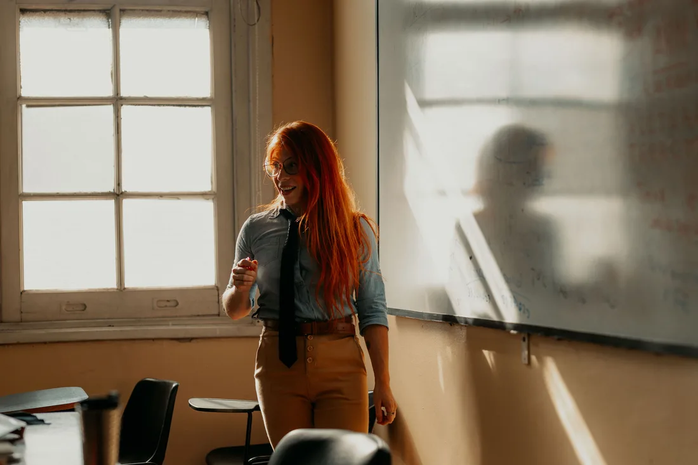
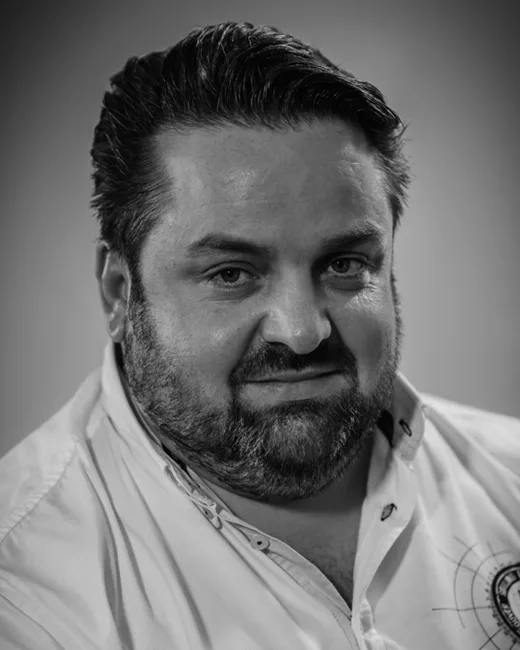
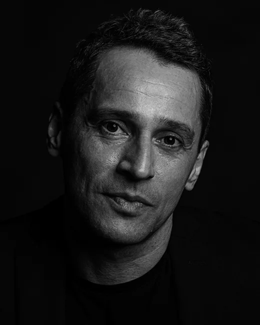
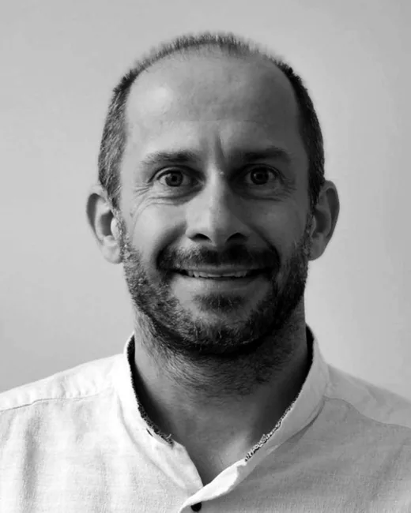
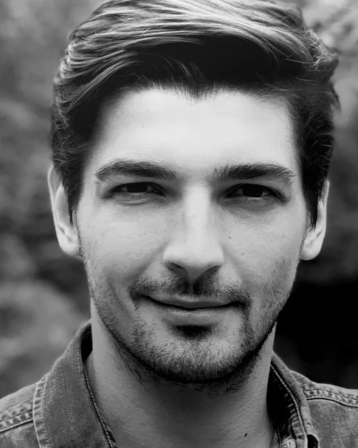

Duševní zdraví je premisou
společenské udržitelnosti.
Vzděláváme děti a mladé dospělé v oblasti duševního zdraví prostřednictvím interaktivních médií — hravě, citlivě a ve spolupráci s odborníky.
Náš vlajkový projekt
Hra, která
učí cítit.
Vážná digitální hra o duševním zdraví pro teenagery a mladé dospělé. Vyvíjena ve spolupráci s odborníky a s podporou Národního ústavu duševního zdraví a projektu Nevypusť duši.
Více o hřeKdo je FeelWell
Jsme organizace složená z odborníků na vzdělávání, duševní zdraví a sociální inovace. Chceme řešit enormní nárůst psychických potíží mezi dospělými i dětmi. Považujeme toto téma za společensky zcela zásadní.
Na základě dosavadní trajektorie i postupného odhalování příčin lze důvodně očekávat pokračování tohoto trendu, a pokud nedojde k potřebným pozitivním změnám, destruktivní dopady na úrovni individuální, rodinné i společenské budou narůstat.

Proč na tom záleží
Pandemie Covid-19 vyvolala kromě jiného také nárůst psychických obtíží, se kterými se musela vyrovnávat významná část populace.
Od lidí, kteří se rázem ocitli v existenční nouzi, přes ty, kdo se ocitli ve stavu vysoké míry izolace, rodiny těžko se vyrovnávající s ponorkovou situací, až po mladé lidi, jejichž sociální život se rázem zcela přenesl do digitálního prostředí — se všemi omezeními a riziky, která to sebou nese.

Tým FeelWell
Odborníci na vzdělávání, duševní zdraví a sociální inovace, kteří stojí za projektem.

MUDr. Martin Brunovský, Ph.D.
Odborník v oblasti duševního zdraví (Národní ústav duševního zdraví, Psyon)

Mgr. Bohumil Kartous, Ph.D.
Prorektor Vysoké školy ekonomie a managementu, expert v oblasti vzdělávání a komunikace

Mgr. Viktor Kubát, MBA
Projektový manažer, provozovatel sociální služby
Mgr. Lucie Mannheimová
Psycholožka, UX researcher

Mgr. Václav Šašinka
Psycholog se zaměřením na vzdělávání a psychoterapii, výzkumný pracovník
Daimoon
Prvním a ústředním projektem FeelWell je platforma a stejnojmenná vážná digitální hra Daimoon, zabývající se duševním zdravím a určená primárně pro teenagery a mladé dospělé.
Koncept vážné hry umožňuje zvýšit motivaci zabývat se duševním zdravím (vlastním i lidí v blízkém okolí), osvojit si prvky péče o duševní zdraví a psychohygieny, a zároveň propojit mladé lidi s poskytovateli péče o duševní zdraví — hra jim pomůže seznámit se s ekosystémem péče o duševní zdraví v Česku.
Smyslem digitální vážné hry i celé platformy je nabídnout inovativní způsob intervence a edukace: preventivně snížit psychickou zátěž, upozornit mladé lidi na stavy, během nichž je vhodné vyhledat pomoc, a samotnou pomoc zprostředkovat. Hra vhodně doplňuje stávající nabídku služeb partnerů — Národního ústavu duševního zdraví, projektu Nevypusť duši a dalších.
Fáze 1 — Inkubace
Výzkum, ověření konceptu a nastavení metodiky. Zjištění z inkubační fáze jsou k dispozici ve zprávách níže.
Fáze 2 — Vývoj a implementace
Vývoj hry a její následné zapojení do ekosystému péče o duševní zdraví v Česku. Finalizace projektu proběhne do poloviny roku 2027.
Spolufinancováno Evropskou unií
Číslo projektu: CZ.03.03.01/00/23_051/0005145
Pojďme na tom
pracovat spolu.
Zastupujete školu, poradnu nebo organizaci a projekt vás zajímá? Zanechte na sebe prosím kontakt — ozveme se vám.